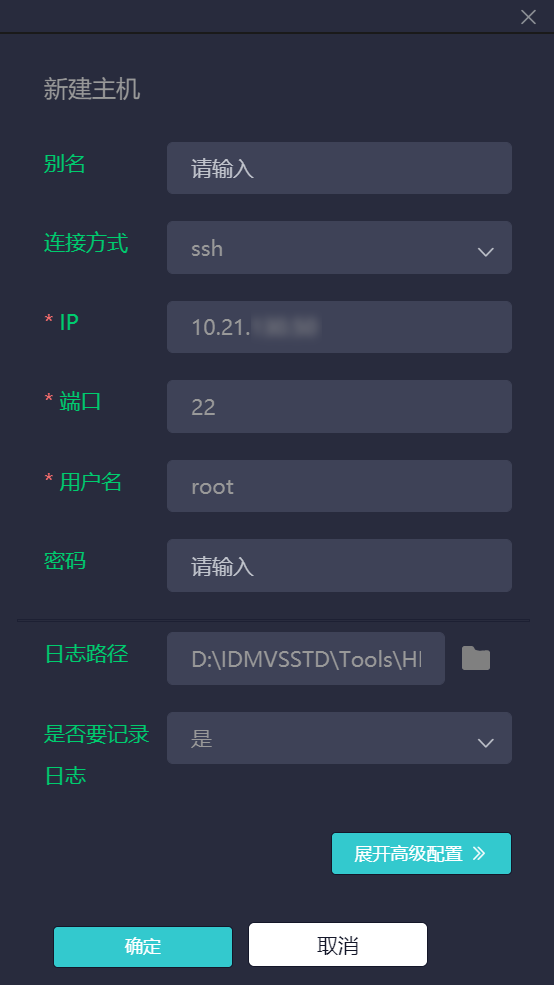
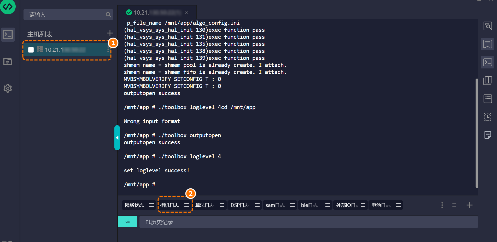
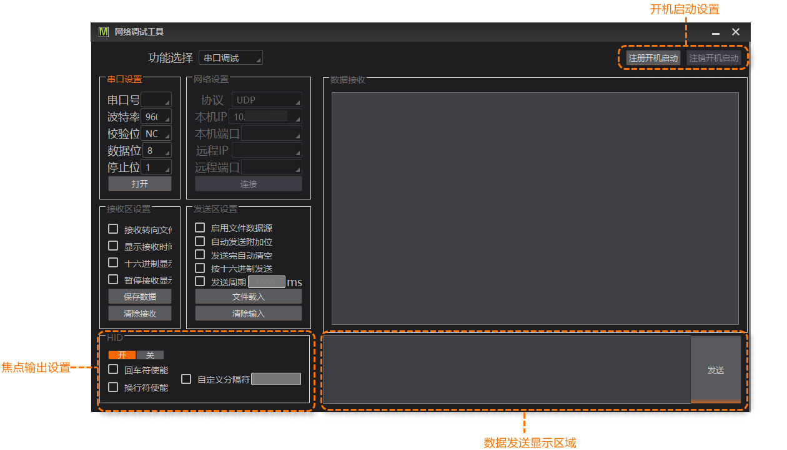

其他工具
除前文所述工具外，IDMVS还支持HIKTerm日志采集工具、IDPS工具、网络调试工具和USB驱动安装工具。
-
HIKTerm日志采集工具可提供实时采集日志、远程系统访问和发送调试指令功能，适用于读码器深度问题排查。
-
IDPS工具是专为超小型智能读码器开发的客户端软件，支持串口和设置码双配置模式，涵盖参数设置、图像预览、查看读码结果和数据交互等功能。
-
网络调试工具是一款集网络通信测试与串口调试功能于一体的通用工具，适用于多种场景的通信调试与问题排查。
-
USB驱动安装工具专用于安装读码器驱动程序，确保IDMVS能够正常枚举和连接USB接口的读码器。
HIKTerm日志采集工具
HIKTerm日志采集工具类似SecureCRT串口调试工具，主要用于实时收集读码器的日志信息、远程进入系统、发送调试指令等功能。相较于IDMVS的读码器日志功能，HIKTerm更适合高级调试与问题追踪。二者对比如下。
|
日志工具 |
使用场景 |
特点 |
|---|---|---|
|
HIKTerm |
|
|
|
读码器日志 |
从mnt/cfg/log等路径导出读码器日志文件，适合常规日志导出。具体介绍参见读码器日志。 |
运行日志，记录固定日志信息 |
使用HIKTerm工具的操作步骤如下。
-
单击菜单栏的，可自动跳转到HIKTerm工具所在目录。
-
将HIKTerm压缩包解压到当前文件夹。
-
进入解压后的文件夹，双击运行Terminal.exe文件后进入工具主界面。
图 1 HIKTerm工具主界面 -
单击主机列表右侧的选择新增主机。
图 2 新增主机 -
配置以下主机连接信息。
-
连接方式：仅经济型极小型智能读码器选择telnet，其他智能读码器选择ssh。
-
IP：输入需要收集日志信息的读码器IP地址。
-
用户名：输入“root”。
-
日志路径：选择日志路径。
-
是否要记录日志：选择“是”。
说明未提及的参数保持默认即可。

图 3 配置主机连接信息 -
-
单击确认，完成主机新增。
-
在主界面主机列表双击刚添加的主机，进入设备控制台。
-
单击下方相机日志标签页，回车开始实时记录日志。

图 4 相机日志 -
问题复现后，HIKTerm会将实时采集的日志自动保存在设置的日志路径下。请将该文件打包发送给技术支持，以便进一步分析处理。


HIKTerm必须持续运行。若出现网络中断或读码器断电重启，需手动重新连接主机。
IDPS工具
IDPS是一款专为超小型智能读码器开发的客户端软件，主要用于读码器的参数配置、采集图像预览、读码结果查看以及数据交互。软件提供串口配置、设置码配置2种配置方式，可适用于串口、离线不同的应用场景。具体介绍和使用方式参见海康机器人IDPS智能读码器客户端用户手册。
网络调试工具
网络调试工具集成了串口和网络调试功能，能够简化读码器的连接测试、协议验证及故障诊断流程。该工具支持TCP、UDP、串口等多种通信协议，可模拟客户端或服务器端，验证读码器与上位机之间的连通性，帮助您快速验证通信参数，从而提升调试效率。

使用网络调试工具的操作步骤如下。
-
单击菜单栏的，可自动跳转到网络调试工具所在目录。
-
将网络调试工具压缩包（CommAssist_Release_*.zip）解压到当前文件夹。
-
进入解压后的文件夹，双击CommAssist.exe进入工具主界面。
-
在主界面顶部功能选择处选择要调试的功能，可选如下功能。
-
串口调试：在PC上创建一个虚拟的串口通信环境，从而监控、调试和读码器串口的通信过程。
-
网络调试：在PC上创建一个虚拟的网络通信环境，模拟客户端或服务器端进行数据收发，从而监控、调试和读码器的网络通信过程。
-
-
配置串口或网络设置。
-
当选择串口调试时，在串口设置区域可配置串口号、波特率、校验位、数据位和停止位。完成设置后，单击打开，开启串口连接。
-
当选择网络调试时，在网络设置区域配置协议，根据所选协议配置相关参数。完成设置后，单击连接，开启网络连接。
-
当协议选择“UDP”时，配置如下参数。
-
当协议选择“TCP Client”时，配置如下参数。
-
当协议选择“TCP Server”时，配置如下参数。
-
-
-
（可选）在接收区设置区域，配置数据接收相关参数。
-
（可选）在发送区设置区域，配置数据发送相关参数。
-
在主界面数据发送区域，输入待发送数据，单击发送，完成数据发送。
-
在数据接收查看读码器发送给计算机的数据。
-
（可选）在HID区域，选择开，开启焦点输出功能。
开启焦点输出功能后，会将收到的数据输出到鼠标焦点位置，可配置回车换行符、自定义分割符。
USB驱动安装工具
USB驱动安装工具用于在计算机上安装高性能驱动程序，以实现对USB接口读码器的正常枚举和稳定连接。
当您在安装IDMVS时，在安装选项页面勾选了USB 3.0，下文提到的USB驱动均会安装，无需重复安装。当您未勾选USB 3.0，后续又需使用USB接口读码器，请使用USB驱动安装工具安装驱动。
使用USB驱动安装工具的操作步骤如下。
-
单击菜单栏的，可自动跳转到USB驱动安装工具所在目录。目录下存在如下两种USB驱动。
-
EliteDrivers：USB接口极小型智能读码器专用驱动程序。
-
usb_driver：USB 3.0驱动程序。
-
-
进入EliteDrivers文件夹，双击InstWiz3.exe运行驱动安装程序。
说明-
您也可通过命令行方式安装驱动，安装命令请参见文件夹中的“驱动安装程序使用说明.txt”文件。
-
在安装驱动程序之前请从USB接口上取下所有的设备，如果在连接设备的情况下安装，需要重新插拔后系统才可以正确识别设备。
-
运行InstWiz3.exe时，务必保证同目录下包含mkSetup.dll、language.dll、win98目录、winlh64目录、winlh86目录、 winxp64目录和winxp86目录等全部内容，并保持原有的目录结构
-
-
进入usb_driver文件夹，双击Install.bat运行驱动安装程序。
说明当您要卸载USB 3.0驱动程序时，双击Uninstall.bat运行驱动卸载程序。